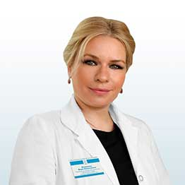

Восстановим зрение! Всего за 40 минут* Глаукома – наш профиль!

Вещикова Вера Николаевна
Руководитель центра офтальмологии и микрохирургии глаза, главный офтальмолог ОН КЛИНИК, офтальмохирург, КМН
При катаракте следует регулярно измерять внутриглазное давление и проходить обследование – план диагностики назначает офтальмолог с учетом клинической картины. Исследования проводятся не реже 1 раза в год (оптимально – каждые 3-6 месяцев).
3 факта о докторе
Вещикова Вера Николаевна
Ультразвуковая факоэмульсификация с имплантацией искусственного хрусталика является золотым стандартом лечения катаракты. Это безопасный, наиболее эффективный и распространенный в мировой клинической практике метод решения проблемы.
Факоэмульсификация является многоэтапной операцией, которая позволяет частично восстановить и сохранить зрение.
Записаться на приём
Преимущества лечения первичной или вторичной катаракты в ОН КЛИНИК:
Применяется факоэмульсификатор последнего поколения Alcon Infiniti (США) – оборудование экспертного класса, обеспечивающее максимальную точность проведения операции на глазах и установки интраокулярных линз.
Используются интраокулярные линзы ведущих европейских и американских производителей (Zeiss, Alcon, Hoya и др.). Эти линзы отличаются гипоаллергенностью, безопасностью, долговечностью, хорошей приживаемостью.
Обеспечивается комплексное обследование (персональная предоперационная подготовка занимает минимальное время).
Ориентир на инновационные методики с доказанной эффективностью – мы предлагаем вам лучшее, что есть сегодня в современной офтальмологии.
Проведение операций амбулаторно – микрохирургия глаз вышла на новый уровень и не требует госпитализации. Сразу после операции (удаления и замены хрусталика) или после лечения вторичной катаракты можно отправиться домой.
Наблюдение пациентов в течение 3-х месяцев после операции по восстановлению зрительной функции.
Мы диагностируем
Для уточнения состояния сетчатки и хрусталика, а также для оценки функции зрения и выявления возможных осложнений проводятся:
оценка остроты зрения с помощью таблицы Сивцева;
периметрия глаз – диагностика, направленная на определение полей зрения;
тонометрия – определение внутриглазного давления глаз;
биомикроскопия – исследование глазного аппарата с целью оценки состояния хрусталика, передней камеры, стекловидного тела, радужки;
рефрактометрия – диагностика, направленная на определение силы преломления света при прохождении через сетчатку;
УЗИ глаз (офтальмоэхография) – диагностика, позволяющая исследовать структуры глаз, выявить врожденную глаукому, помутнение хрусталика и другие опасные состояния.
Для наших пациентов важно, что операция:
Проходит амбулаторно, приблизительно 30-40 минут. Под местной анастезией. Без боли.
Точечное воздействие: при хирургической операции не затрагиваются здоровые сегменты глаза. Это важно!
Высокая эффективность лечения глаукомы.
Быстрое восстановление зрения: пациент хорошо видит уже в течение первой недели после операции;
Не требуется стационарного пребывания. Пациент отправляется домой.
Нет послеоперационных ограничений. Доктор дает рекомендации своему пациенту.
Оперирующий врач, ведет своего пациента и бесплатно наблюдает в послеоперационном периоде в течении одного месяца.
Специальное предложение апреля! Операция со скидкой – 20%.